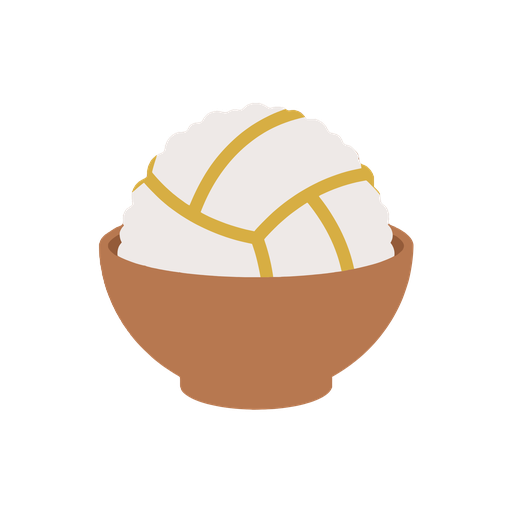

기준은 지금 로고다. 원본 PNG에서 그릇 윤곽·누룽지 윤곽·이음선을 그대로 따내 벡터로 옮겼고, 정면 모습은 원본과 같다. 다른 각도는 3D로 계산했다. 공은 로고 이음선의 바탕이 된 배구공 아이콘 구조(가운데 Y자, 세 조각, 조각마다 이음선 하나)를 실제 구에 감은 모델이고, 원본 이음선과 평균 3~4px 안에서 겹친다. 그릇은 원본 윤곽을 줄마다 재서 회전체로 돌렸다.
01 · 원본과 벡터
지금 로고를 벡터로

지금 로고assets/logo-512.png (비트맵)벡터로 옮긴 원본원본에서 윤곽과 이음선을 따냈다. 모양·색·자세 모두 원본과 같다
02 · 부품
떼어 놓은 두 부품
누룽지 공원본 자세 그대로 꺼낸 것. 그릇에 가려졌던 아래쪽도 같은 3D 모델로 이어진다밥그릇원본과 같은 높이(11°)에서 본 빈 그릇빈 그릇, 비스듬히32°에서 안쪽 바닥까지 보이게. 합석 단계(밥 차오름)의 바탕나란히둘을 떨어뜨려 놓은 기본 배치
03 · 각도 — 누룽지 공
공을 돌려 본 모습
정육면체처럼 놓인 여섯 조각, 조각마다 테두리 둘과 이음선 하나. 모서리 하나(Y자)가 정면을 보고, 그 축을 따라 조금 비틀려 있다. 참고 아이콘처럼 테두리는 구의 끝선보다 앞에 있어서, 이음선이 테두리를 따라 돌지 않고 가로질러 끝난다. 값은 참고 아이콘과 로고 선에 맞춰 구했다.
정면원본 로고와 같은 자세왼쪽으로 45°원본 자세에서 좌우로 45° 돌린 모습위에서원본 자세를 위에서 내려다본 모습뒤에서반 바퀴 돌린 모습. 뒤쪽에도 Y자가 하나 있다
04 · 각도 — 밥그릇
그릇을 내려다보는 높이별
원본 높이11° · 지금 로고가 그려진 높이비스듬히30° · 안쪽 바닥이 보이기 시작높이서60° · 입구가 동그랗게 열린다위에서90° · 동심원 세 겹
05 · 조합
둘을 합치는 방법
비스듬히 얹힘원본을 30° 위에서 본 모습튀어 오름원본에서 공만 띄웠다. 불러오는 중·당겨서 새로고침 동작에위에서동그라미 안에 동그라미. 지도 마커·앱 아이콘 후보굴러 나옴그릇이 쓰러지고 공이 굴러 나왔다. 빈 결과·404 자리수북이공 셋이 담긴 그릇. 한솥밥(3팀 이상) 표현공만 돌림원본에서 공만 90° 돌렸다. 회전 애니메이션의 중간 장면
06 · 직접 돌려 보기
각도 정하기
처음 값(0°, 0°, 11°, 0)이 원본이다. 필요한 각도를 찾으면 숫자 네 개를 알려주면 그 각도로 SVG를 뽑는다.
07 · 크기와 색
작게, 한 색으로
작은 크기원본을 그대로 줄였다. 작은 크기에서 이음선이 뭉개지는지 보는 용도한 색원본 모양 그대로, 도장·각인·흑백 인쇄용. 면은 갈색, 이음선과 그릇 안쪽은 빈칸옐로 바탕원본 그대로 브랜드 옐로 위에 얹고, 공 가장자리에만 얇은 갈색 테를 둘렀다
누룽지(밥) #EDE8E7이음선 #D7AE44그릇 #B6774F그릇 안 #925A39
08 · 정할 것
고르면 다음 단계로
공 테두리 처리: 참고 아이콘처럼 테두리를 구의 끝선보다 조금 앞에 둬서 이음선이 테두리를 가로질러 끝나게 했다. 이 방식으로 갈지
앱 아이콘·지도 마커에 05 위에서 형을 쓸지
쓸 조합: 튀어 오름(불러오는 중), 굴러 나옴(빈 결과), 수북이(한솥밥) 중 어디에 넣을지
고른 것은 assets/logo/ 아래 SVG 파일로 뽑는다. 기본 로고(원본)는 바꾸지 않는다